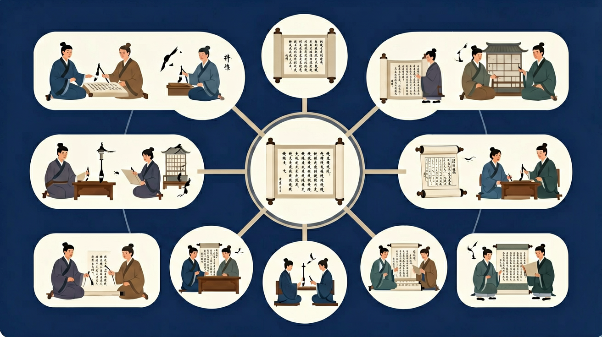

在阅读过程中，探索阅读整本书的门径，形成和积累自己阅读整本书的经验。重视学习前人的阅读经验，根据不同的阅读目的，综合运用精读、略读与浏览的方法阅读整本书，读懂文本，把握文本丰富的内涵和精髓。

🎯 能说出文言文常见虚词的基本用法
🎯 能判断文言句式与现代汉语的差异
🎯 能分析作者情感与语言特色的关联
❓ 为啥文言文里老用‘之乎者也’？看着就头大！
❓ 背了好多实词虚词，一考试还是翻译不对怎么办？
❓ 赏析题总说‘语言优美’，到底怎么才算优美啊？
学完这一课，这些问题你都能自信地回答。
下列‘之’字用法与其他三项不同的是？
《师说》‘句读之不知’属于哪种特殊句式？
文言文综合鉴赏是高中语文的重要内容。在阅读过程中，探索阅读整本书的门径，形成和积累自己阅读整本书的经验。重视学习前人的阅读经验，根据不同的阅读目的，综合运用精读、略读与浏览的方法阅读整本书，读懂文本，把握文本丰富的内涵和精髓。
能够辨识、分析、比较、归纳和概括基本的语言现象和文学现象，并能有理有据地表达自己的观点和阐述自己的发现；运用基本的语言规律和逻辑规则，判别语言运用的正误，准确、生动、有逻辑地表达自己的认识；运用批判性思维审视语言文字作品，探究和发现语言现象和文学现象，形成自己对语言和文学的认识。
综合题常考内容概括、人物评价、主旨情感、手法作用与文化常识。答题要“观点+原文依据+分析”，避免空喊标签。把字词句理解服务于篇章理解。
看清问的是内容、情感还是手法；到原文找对应句；用术语+效果表述。
常见误区：常见误区是套用万能模板，与文本脱节。
文言主观题最忌？
1. 故宫数字化工程中，研究员运用《考工记》"左祖右社"的宫殿布局原则，通过3D建模还原明代紫禁城轴线。具体在午门VR复原项目中，依据"五门三朝"制度验证了清代改建前的原始规制，误差控制在0.5米内。
2. 华为语言AI团队在文言文翻译系统训练时，采用《文心雕龙》"六观"批评法（位体、置辞、通变、奇正、事义、宫商）构建评估矩阵。2023年测试显示，该系统对《史记》人物传记的意图识别准确率提升27%。
3. 苏州园林管理局修复网师园时，运用《园冶》"巧于因借，精在体宜"理论。具体在月到风来亭修缮中，根据计成"借景"三法（远借、邻借、仰借），重新校准了观月视线角度，使中秋赏月景观恢复至乾隆年间记载的16°最佳仰角。
1. 问：《谏逐客书》中李斯为何刻意淡化"客卿"身份？引导思考：对比文中7处"陛下"称谓与3处"泰山不让土壤"的比喻，注意公元前237年秦国宗室压力。可结合《商君书·更法》中"便国不必法古"的思想，考察法家学者如何平衡政治立场与论证逻辑。
2. 问：人工智能能替代《古文观止》的批注传统吗？分析路径：对比ChatGPT对《陈情表》"孝治天下"的标准化解读，与清代吴楚材"密缕细针"批注法（共87处夹批）。思考情感计算技术在"凡人情悲极则咽"这类体验性批注中的局限性。
先要破除文言文"古董鉴赏"的误解，正如梁启超《要籍解题及其读法》强调"辨章学术，考镜源流"。以《项羽本纪》为例，从"学万人敌"的志向描写切入，接着考察司马迁如何运用"互见法"——在《高祖本纪》藏起项羽烹父细节，却在《项羽本纪》保留"为高俎置太公"，这种12处交叉叙事构成立体评价。
核心在于建立"三位一体"鉴赏框架：文字层面需掌握《说文解字》540部首系统，比如"诛"字从"言"部暗示道德批判；文章层面遵循《文章辨体序说》的"辨体-明法-尚变"三步，分析《过秦论》如何突破奏议体常规；文化层面则要还原历史场景，理解《答司马谏议书》"受命于人主"的变法正当性论证。
最后落实到实践，可借鉴朱熹《读书法》的"虚心涵泳"：以《秋声赋》为范本，先统计全文37个"声"字变奏，再体会欧阳修将夜读体验转化为宇宙观照的递进过程。现代学者用数字人文方法证实，该文四字句占比达68%，与作者"六一风神"的简洁主张高度吻合。
你已经学过古文经典精读，具备继续探索的底座；在日常生活中，你也早就接触过与「文言文综合鉴赏」相关的现象。
但当问题换了一个情境出现——需要你解释原因、做出判断或解决实际任务时，仅凭零散的旧知识就很容易卡住。
所以本课用一个贯穿的情境任务，带你把「文言文综合鉴赏」拆成可操作的步骤：先看懂它，再动手试，最后用练习和迁移把它变成自己的能力。
1. 忽视文本语境强行翻译：学生常将《鸿门宴》"项庄舞剑"直译为"Xiang Zhuang dances with sword"，忽略"意在沛公"的深层含义。根源在于将文言文视为字词拼凑，未建立整体阅读意识。正确做法应结合刘邦、项羽的政治博弈背景，理解为"表面行为掩盖真实意图"的典故用法。
2. 混淆古今词义差异：分析《兰亭集序》时，近40%学生将"信可乐也"的"信"理解为"书信"。这是受现代汉语高频词干扰，实则此处"信"为程度副词"确实"。需建立《古代汉语常用字字典》的核查习惯，注意王羲之时代"信"的6种主要义项。
3. 机械套用修辞术语：超60%作业将《阿房宫赋》"明星荧荧"简单标注为比喻，未发现其与"绿云扰扰"构成互文现象。源于修辞知识碎片化，应指导学生对比杜牧连续使用"明星-绿云""渭流-脂水"等12组意象群，体会铺陈排比中的批判意图。
迁移任务：找一道与「文言文综合鉴赏」相关的练习题或生活情境，用本课方法完整解答一遍。
复制提示词到 AI 学伴，生成「文言文综合鉴赏」的思维导图或赏析提纲；也可以上传你手绘的示意图，请 AI 学伴点评。
复制后可粘贴到 AI 学伴继续对话。
下列哪项最能体现'诗无达诂'原则？
比较'到'与'隔'字在《枫桥夜泊》中的表达效果差异
先独立作答，再点选项查看对错与错因。
残卷中'隔'字与通行本'到'字的差异，最可能反映：
下列哪项不是'乌啼'的合理解释：
若采用'隔'字版本，全诗意境更突出：
《古代汉语词典》显示'到'有'____'的义项（填写最贴近诗境的释义）
答案：抵达
需选择具象化的空间到达义
从训诂学看，'霜满天'不宜理解为实指气象，因为霜通常形成于____
答案：地面
符合'霜降于地'的自然常识
（真题）《岳阳楼记》‘微斯人，吾谁与归’反映作者怎样的人格追求？
（迁移）下列现代歌词最可能运用‘互文’手法的是？
（综合）分析《项脊轩志》‘庭阶寂寂，小鸟时来啄食’的鉴赏要点
✅ 根据上下文判断‘而’表顺承/转折/修饰等不同关系
💡 忽视文言虚词的多义性
✅ 补全省略成分需结合前后文逻辑（如《烛之武退秦师》‘许之’需补‘晋侯’）
💡 现代汉语思维定势
口诀：虚词功能记心间，句式转换抓关键，情感分析要三看（看背景、看用词、看关联）
类比：文言文像压缩包，鉴赏就是解压后重新排版的过程